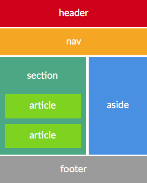

Pattern di sviluppo "moderno" con Angular, React e Vue
Andrea Briganti
Presentazione e demo: https://bit.ly/2HPX7Q1
Lo sviluppo "canonico"
Una buona dose di HTML...
<div class="content bg-tab" style="padding-left:5px;padding-top:10px;">
<div class="row collapse border-bottom-1">
<div class="large-6 medium-6 small-6 columns">
<h6 class="f-yellow">Nome Squadra</h6>
Lo sviluppo "canonico"
... contornato da Javascript qui e li.
function update_livepanel() {
var placeHolder = $("#live-container");
$.get("/api/v1.0/livematches",function(data,status,xhr){
if(oldlastupdate == null || data.lastupdate != oldlastupdate) {
oldlastupdate = data.lastupdate;
var html = template(data);
placeHolder.empty();
placeHolder.append(html);
placeHolder.foundation('reflow');
[...]
}
Come diventa il codice:

La reazione di chi deve modificare il codice

...specie se il codice è altrui
Maggiori limiti attuali
- Difficoltà nell'organizzare id e classi per gli script
- Javascript è un linguaggio poco "ordinato"
- Confusione al crescere della dimensione
- Possibilità praticamente nulla di fare refactor
- Il codice della pagina non è semantico
 HTML5 e semantica
HTML5 e semantica

 Web Components
Web Components
Strutture complesse...
<div class="menu-container">
<ul class="main-menu">
<li><a href="#">Voce Menu 1</a></li>
<li><a href="#">Voce Menu 2</a></li>
</ul>
</div>
...acquistano semantica
<menu>
<menu-voce url="#">Voce Menu 1</menu-voce>
<menu-voce url="#">Voce Menu 2</menu-voce>
</menu>
Per maggiori info: http://webcomponents.org
Web Components e frameworks
Benché non tutti i browser supportino i webcomponents, i principali framework per lo sviluppo sul web ne utilizzano i concetti cercando di separare la presentazione del componente dalla sua logica.
Cosa impareremo in questo workshop?
- Creare un'applicazione in Angular, React e Vue
- Comprendere i pattern comuni principali
- Dare le basi per il testing
Di cosa ho bisogno per mettere in pratica ciò che imparerò qui?
- Una versione recente di Nodejs
- Un IDE/Editor con il quale vi sentite a vostro agio (VSCode? Webstorm?)
- (Opzionale) Un terminale a linea di comando
- (Ovviamente) Una connessione Internet
Linguaggio consigliato 
Per lo sviluppo utilizzeremo Typescript
- Codice più ordinato e programmazione orientata agli oggetti
- Rilevazione di errori a "tempo di compilazione"
- Supporto al completamento automatico negli IDE
La sintassi di Typescript va "nella direzione" di Ecmascript 6 e il compilatore genera all'occorrenza codice ES 5 e 6.
Alternative a Typescript
Attualmente è la best choice per Angular, opzionale ma gradito per gli altri framework.
Tuttavia sviluppare in Typescript garantisce la rilevazione degli errori a tempo di compilazione, ecc...
In alternativa possiamo utilizzare:
 Ecmascript 5
Ecmascript 5- Ecmascript 6 + babel
Architettura base di una webapp
Creepy Artist Theater Congress Center
Vogliamo realizzare una piccola webapp per la reception di un centro congressi.
Allo scopo è già stata creata una mini api rest in nodejs che potete trovare nella directory restapi dei demo
$ npm install
$ npm run start
workshop checkin RESTful API server started on: 3000
Le api risponderanno al seguente indirizzo http://localhost:3000
 Creazione di una webapp Angular
Creazione di una webapp Angular
Per creare una nuova applicazione Angular si utilizza Angular-cli che genererà tutto il necessario per il progetto.
$ npm install -g @angular/cli
$ ng new cat-congress-center-app
? Would you like to add Angular routing? Yes
? Which stylesheet format would you like to use?
> SCSS [ http://sass-lang.com/documentation/file.SASS_REFERENCE.html#syntax ]
SCSS è consigliato rispetto al CSS classico
Pattern: suddividere l'applicazione in moduli
Lo sviluppo dell'applicazione non deve avvenire aggiungendo componenti e files nel modulo "App", dobbiamo piuttosto suddividere il progetto in moduli
$ ng generate module Reception --routing
Le good practice guidelines su come organizzare moduli e files è disponibile al seguente link
Composizione di un modulo
Ogni modulo in genere è composto da:
- Definizione del modulo (reception.module.ts)
- Definizione del routing (reception-routing.module.ts)
- Definizione dei modelli
- Librerie di funzioni, servizi, guards e filters
- Componenti
One-Way Data Binding

Two-Way Data Binding